Maneuver
Maneuver is a type family intended for contemporary editorial use. It explores unconventional typographic relationships between different styles. Does an italic need a slope? How can stroke modulation change along the weight axis? What is the correlation between text and display styles? What happens when parallel axes perform different functions in the design space? This resulted in a typographic palette built around eight masters with styles suitable for anything from small running text to large headlines. Maneuver also functions as a three-axis variable font.
Joona Louhi
Joona Louhi is a freelance type designer currently based in Helsinki. Before Type and Media, he earned a bachelor’s degree in Packaging and Brand Design from Lahti Institute of Design and worked for several years as a graphic designer with a focus in branding. He is available for custom type design work as well as font production assistance.
 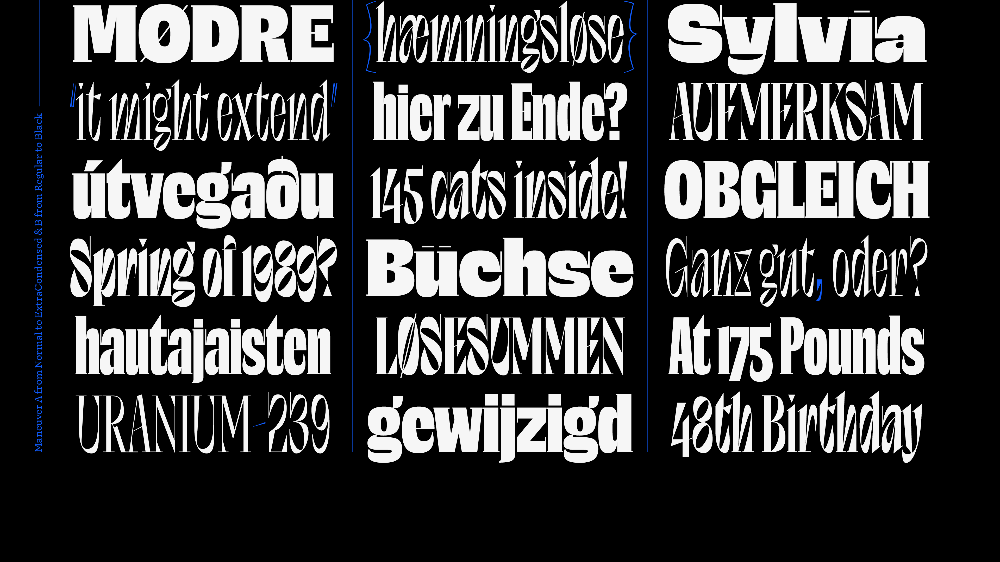
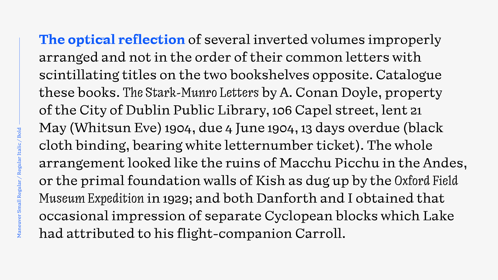
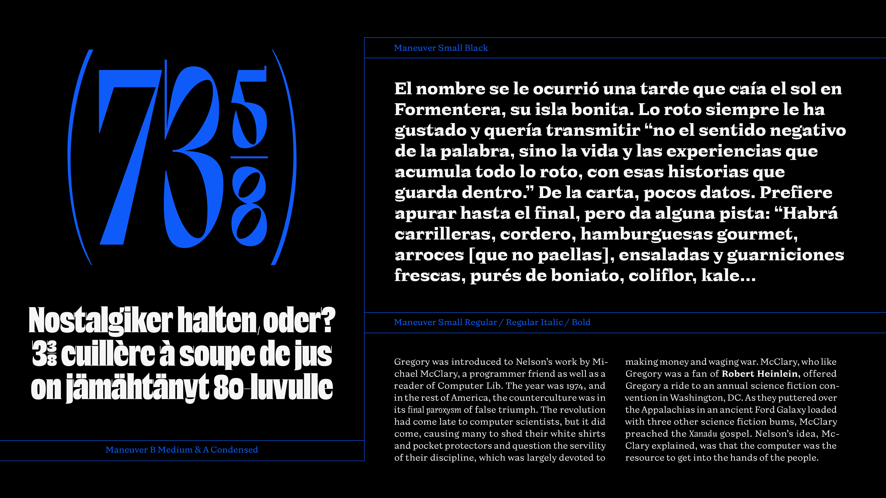
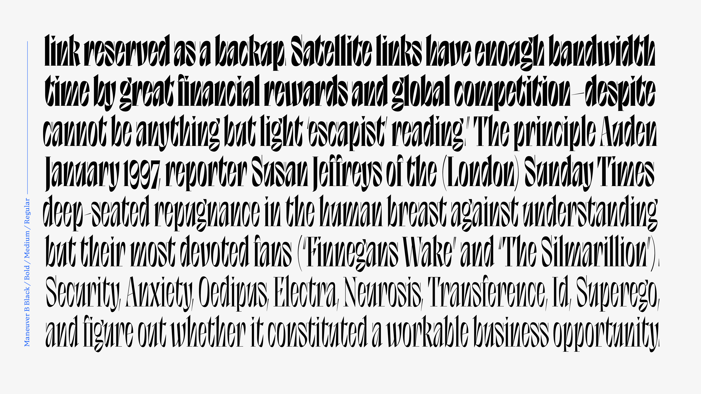
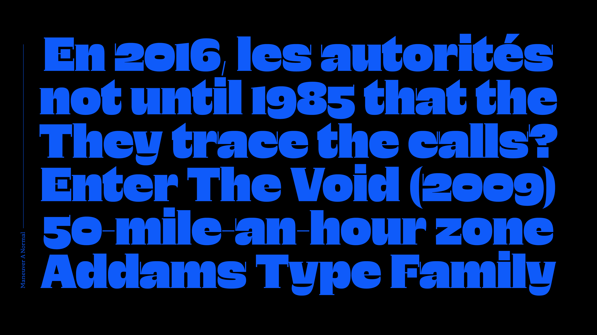
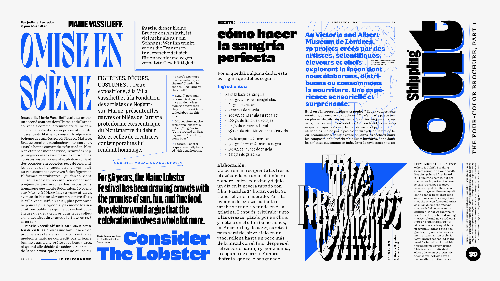
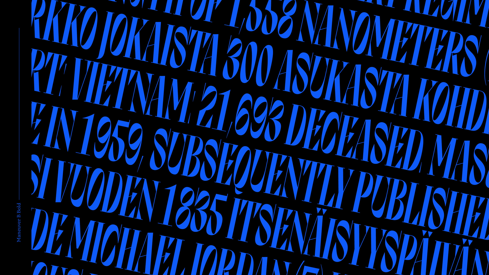
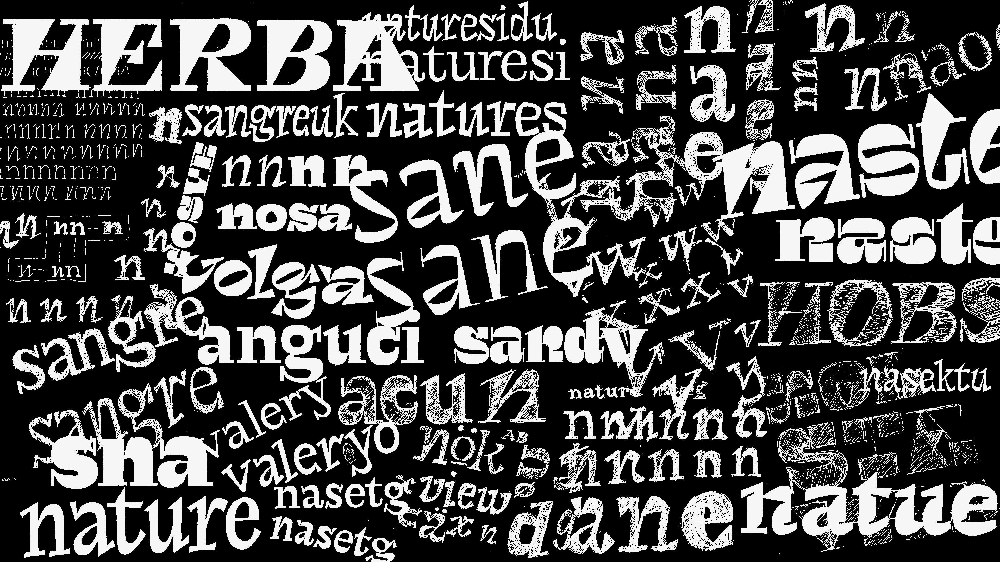
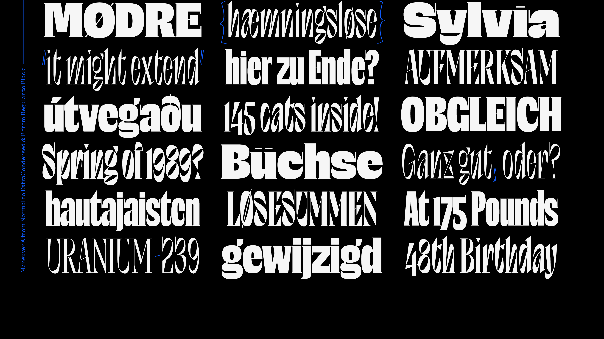
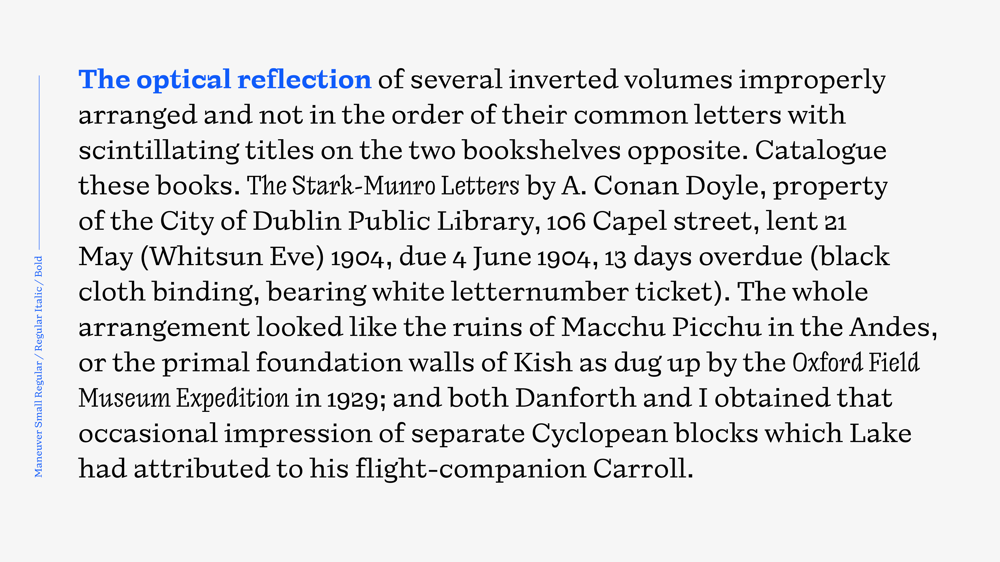
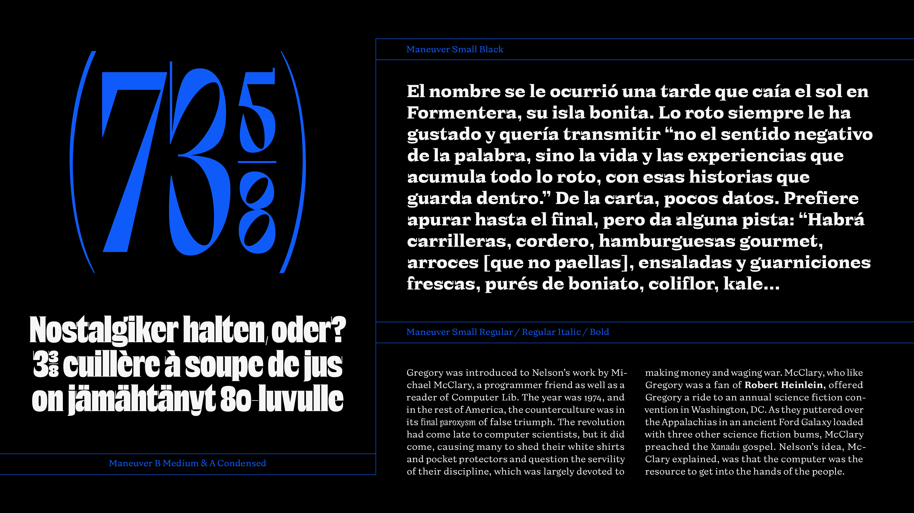
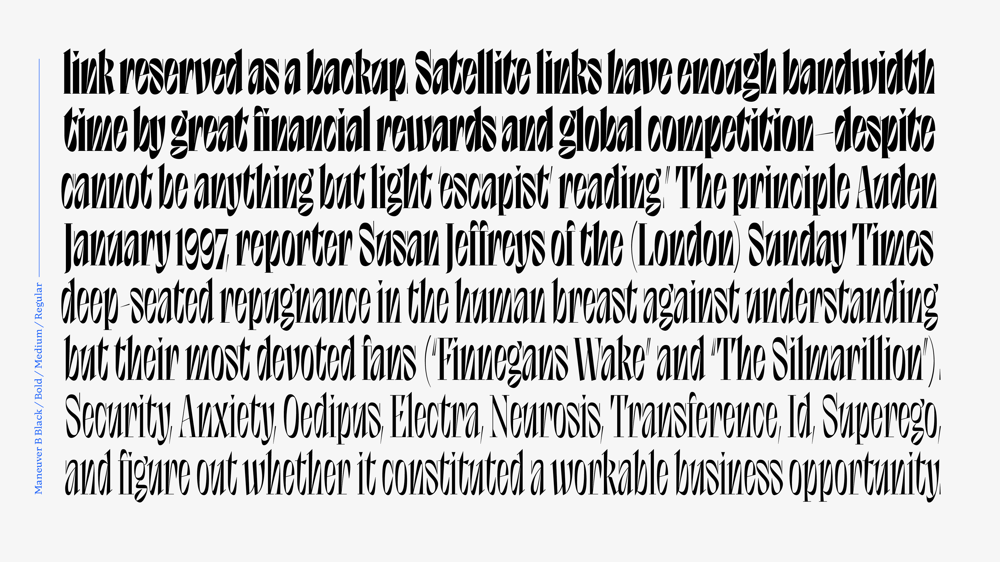
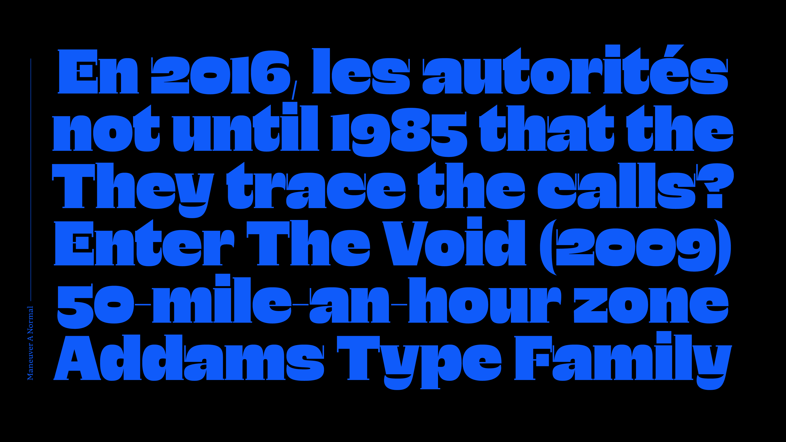
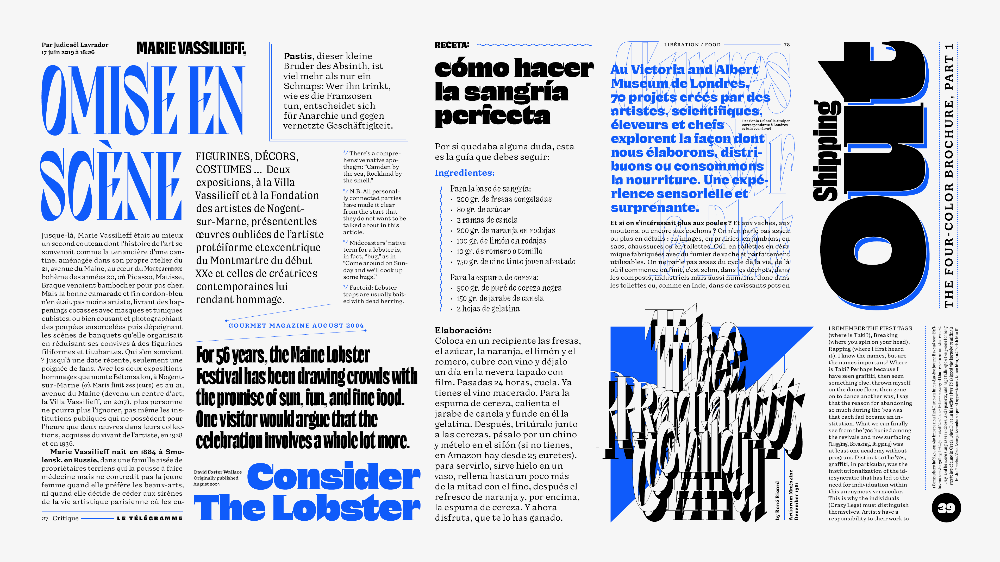
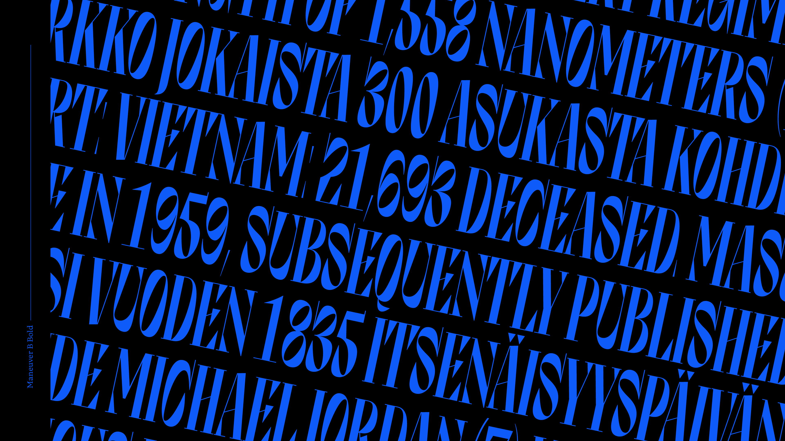
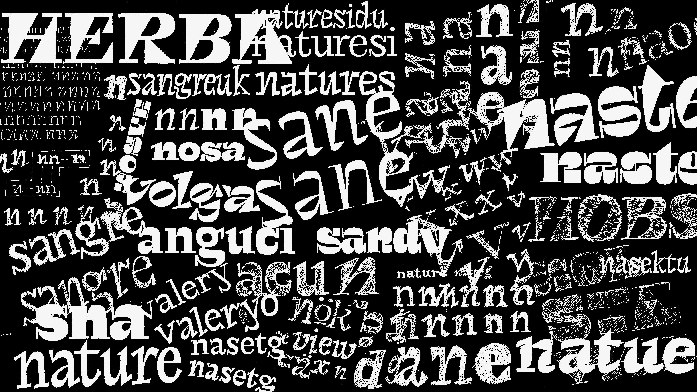